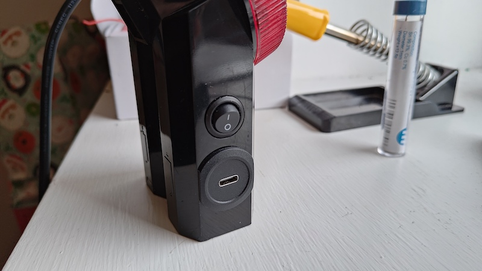
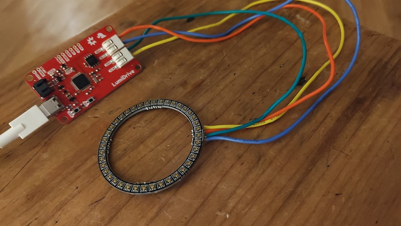

Ever Ready Bike Lights
Modernising Ever Ready/Exide bike lights from the 70s/80s. These lights were a feature of any Gen-X-ers childhood, they used two large 'D cell' R20 batteries and a very dim PR527 0.42 amp bulb which wasn't much good for actually being seen (see nostalgia article on road.cc).
I kept the case, replaced the bulb and reflector with a modern LED ring and driver board, and instead of the old D Cell batteries there's now a LiPo battery with a charging board connected to a USB surface mount port, and a switch.

Parts and Process
There was quite a bit of soldering involved, and some tactical destruction of the inside cavity to make room for everything.
- Sparkfun LumiDrive - the brains/LED driver board. Can be programmed via the Arduino IDE but I ran into countless issues and settled for the Circuit Python/MicroPython environment instead. LumiDrive Hookup Guide
- SparkFun LuMini LED Ring - 2 Inch (40 LEDs)
- LiPo Amigo - LiPo battery charger
- LiPo Battery Pack – 1200mAh
- JST PH 2-Pin Cable - Female Connector 150mm - if you use these there's a couple less solder points to worry about...
- USB Panel Mount - from eBay, there's all kinds.
- Switch - again from eBay
The USB charge port was too big inside the light case but I'd already drilled the hole so kept it even though I found some smaller parts later. A little thought needed to be given to the wiring, I obviously wanted to be able to charge the battery without having the lights on: the USB port was connected internally to the LiPo charger, some soldered connections were then made to the LumiDrive with the switch added to the circuit. The LumiDrive actually supports LiPo charging but I didn't spend any time investigating if I could manage this project without the external charge board. The LuMini LED ring had solder pads and my soldering skills are poor but I managed it. To fit it all in the plastic casing I removed the silver plastic reflector and metal battery fittings, then used a soldering iron to melt away some innards that were getting in the way (no doubt producing some pretty toxic fumes - open a window!)

Sourcecode
The source is just an edit of the demo code:
import adafruit_dotstar
import digitalio
import board
import math
import time
led = digitalio.DigitalInOut(board.D13)
led.direction = digitalio.Direction.OUTPUT
num_pixels = 60
brightness = 0.32
pixels = adafruit_dotstar.DotStar(board.SCK, board.MOSI,
num_pixels, brightness=brightness, auto_write=False)
BLACK = (0, 0, 0)
WHITE = (255, 255, 255)
def travel(color, wait):
num_pixels = len(pixels)
for pos in range(num_pixels):
pixels[pos] = color
pixels.show()
time.sleep(wait)
def color_fill(color, wait):
pixels.fill(color)
pixels.show()
time.sleep(wait)
while True:
travel(WHITE, 0)
color_fill(BLACK,0)